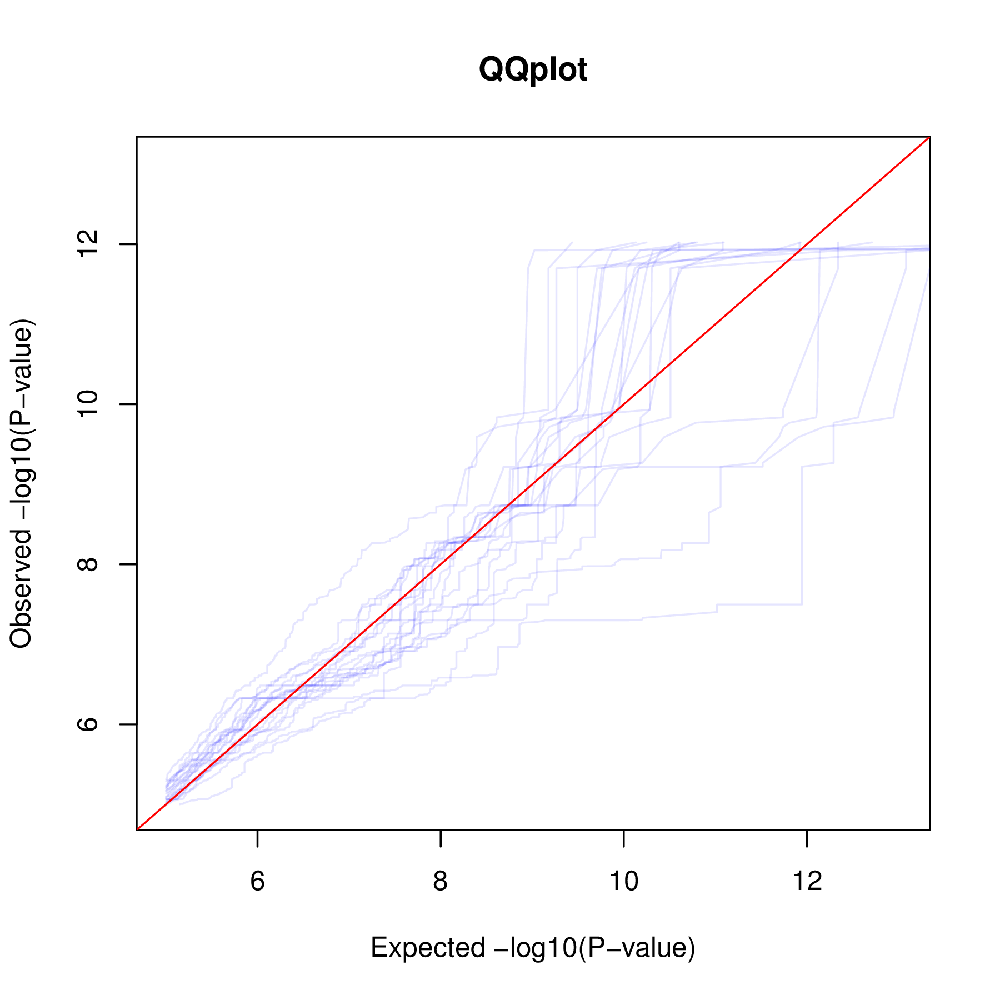

How to run a full pass in trans?
In a full analysis in trans, you need to run separately the nominal pass and the permutation passes. To illustrate this, first download the example data below and go through the two steps; 1. nominal pass and 2. permutation pass.
- The phenotype data matrix for chr22 on 358 samples: BED / index
- The genotype data matrix for chr22 on 358 samples: BED / index
Step1: Run the nominal pass
To do so, run:
QTLtools trans --vcf genotypes.chr22.vcf.gz --bed genes.50percent.chr22.bed.gz --threshold 1e-5 --nominal --out trans.nominal
This computes all pairwise test between variants and phenotypes (excluding the cis-window) and reports the results in 3 output files:
- trans.nominal.best.txt.gz; contains the top hit per phenotype
- trans.nominal.bins.txt.gz; contains a binning of all hits with a P-value above the specified --threshold (=1e-5)
- trans.nominal.hits.txt.gz; contains detailed information (not binned) for all hits with a P-value below the specified --threshold (=1e-5)
These files are detailed below:
zcat trans.nominal.best.txt.gz | head
ENSG00000215270.3 -1 1.12926e-05
ENSG00000237438.2 -1 2.03908e-05
ENSG00000273203.1 -1 0.000138072
ENSG00000273442.1 -1 1.64291e-05
ENSG00000177663.9 -1 3.32289e-05
ENSG00000183307.3 -1 5.1272e-06
ENSG00000069998.8 -1 3.91133e-06
ENSG00000093072.11 -1 1.82101e-06
ENSG00000099954.14 -1 4.99988e-07
ENSG00000182902.9 -1 9.67087e-06
- 1. Phenotype ID
- 2. Dummy
- 3. Nominal P-value of the top hit per phenotype
zcat trans.nominal.bins.txt.gz | head
0 0 0.000231095 1 0.996523 147445
1 0.000231095 0.000462191 0.996523 0.993047 148408
2 0.000462191 0.000693286 0.993047 0.989571 149815
3 0.000693286 0.000924382 0.989571 0.986094 149084
4 0.000924382 0.00115548 0.986094 0.982619 147263
5 0.00115548 0.00138657 0.982619 0.979143 147749
6 0.00138657 0.00161767 0.979143 0.975668 149862
7 0.00161767 0.00184876 0.975668 0.972193 149279
8 0.00184876 0.00207986 0.972193 0.968719 149383
9 0.00207986 0.00231095 0.968719 0.965245 147444
- 1. Index of the bin
- 2-3. Dummy
- 4-5. Boundaries of the P-value bin
- 6. Number of tests falling in this bin
zcat trans.nominal.hits.txt.gz | sort -k7,7g | head
ENSG00000207833.1 chr22 23134977 rs147092127 chr22 39863524 9.48389e-13 -1 0.365398
ENSG00000207833.1 chr22 23134977 rs76864396 chr22 39888462 1.19178e-12 -1 0.363899
ENSG00000207833.1 chr22 23134977 rs12628516 chr22 39939913 2.00021e-12 -1 0.360471
ENSG00000211649.2 chr22 22723982 rs141368136 chr22 32710808 1.16936e-10 -1 0.331991
ENSG00000100033.12 chr22 18924066 rs5770344 chr22 49779694 1.45997e-10 -1 0.330351
ENSG00000211668.2 chr22 23134980 rs147092127 chr22 39863524 1.69775e-10 -1 0.32923
ENSG00000211668.2 chr22 23134980 rs76864396 chr22 39888462 1.90403e-10 -1 0.328375
ENSG00000211668.2 chr22 23134980 rs12628516 chr22 39939913 2.57114e-10 -1 0.326123
ENSG00000211660.3 chr22 23040274 rs73172520 chr22 47653458 5.40445e-10 -1 0.320473
ENSG00000100033.12 chr22 18924066 rs5770381 chr22 49788937 6.03097e-10 -1 0.319629
- 1. Phenotype ID
- 2. Phenotype chrID
- 3. Phenotype start
- 4. Variant ID
- 5. Variant chrID
- 6. Variant position
- 7. Nominal P-value of association
- 8. Dummy
- 9. Regression slope
This trans nominal pass can be tuned using the following options:
- --threshold [float]: this defines the threshold to bin (in *.bins.txt.gz files) or report (in *.hits.txt.gz) nominal P-values. Default is 1e-5.
- --normal: this enforce the phenotypes to be normally distributed
- --window: this defines the cis-window of variants to be excluded from the analysis
- --bins [int]: this defines the number of bins to be used for binning P-values above --threshold (default is 1000)
Step2: Run the permutation passes
The permutation pass is relatively similar to the nominal one. For a single permutation, run:
QTLtools trans --vcf genotypes.chr22.vcf.gz --bed genes.50percent.chr22.bed.gz --threshold 1e-5 --permute --out trans.perm123 --seed 123
This command permutes all the phenotypes in a similar way so that correlation between phenotypes is unchanged. All pairwise tests between variants and phenotypes are then computed (excluding the cis-window) and reported in 3 files as done by the nominal pass: trans.perm123.best.txt.gz, trans.perm123.bins.txt.gz and trans.perm123.hits.txt.gz.
For instance, to run 20 permutations using 4 threads, you can proceed as follows:
for p in $(seq 1 20); do
echo "trans --vcf genotypes.chr22.vcf.gz --bed genes.50percent.chr22.bed.gz --permute --out trans.perm$p --seed $p";
done | xargs -P4 -n10 QTLtools
Produce a QQplot and estimate FDR
Once the nominal and permutation passes done, you can produce a QQplot by running:
Rscript ~/script/plotTrans.R QQplot.pdf trans.nominal.hits.txt.gz trans.perm*.hits.txt.gz
For the example data, you should get something like this:
Now, to estimate FDR, you can go through all the best nominal hits and count how many hits in the permutation passes give a smaller P-values. For instance, for the 100th smallest nominal P-values, if you get 10 smaller permutation P-values, you can assume a 10% FDR at that level. We are currently working on a R script to do this automatically and will release it ASAP.